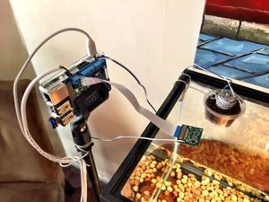
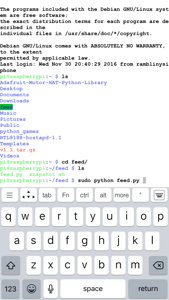

During the summertime I took daily walks around a pond at work. Technically, it’s a glorified drainage ditch built because of the giant parking lot nearby – but hey, I’ll take what I can get! In my experience, whenever a body of water is created, Nature doesn’t care who or what put it there, she takes full advantage; It has some nice trees bordering one side, and plenty of pond critters scurrying about.
One day I noticed a peculiar looking rock and bent down to have a closer look. To my surprise, it was a baby turtle no bigger than a grape! I thought my daughter Ella would love to see him (her?) so I put him in a jar and brought him home. I planned on just letting him go in the pond (i.e. another glorified drainage ditch) next to our house but after everyone else at home saw him, they fell in love with him and we decided to keep him.

A couple months later we had plans to go away for a week on vacation but didn’t have anyone to feed him. Enter: the Raspberry Pi. Can I just say, I love these things?! Man… I have four (maybe more?) now and would have no problem buying more; they’re so useful, and cheap! I’m so happy to live in a world where the Raspberry Pi exists. Alright, I’ll stop gushing…

I bought a motor hat and Pi camera, wired a motor, and rigged up a feeding mechanism so that when we were away, a script would run and automatically feed him at a specific time. While it worked, it wasn’t perfect and the food would sometimes get caught in the feeding hole no matter what design I used – and I tried a bunch of different techniques. The quickest way I came up with to solve that was to make the Pi accessible via the net and I could just remote-in from wherever I was and trigger the feeding mechanism manually and use the camera to verify it worked correctly. If not, I’d simply run it again. THAT worked great…
To make the Pi remotely accessible, I enabled ‘ssh’ and downloaded a Terminal app on my phone. With the appropriate security in place, I could then login from anywhere! To feed him, I ran a simple script I wrote which activates the motor. Same for the images; I’d run a script and save the pictures to a specific folder. I installed and configured a local web server (Apache) which let me view the photos on any web browser.
Was this the best, most elegant way to solve the issue of feeding a pet? I dunno… probably not. I could have just as easily asked a friend, or even bought an automatic feeder – I know they have them. BUT, neither of those would have been any fun! I actually really liked this project. It was simple(ish), I learned a few things, and solved a problem. Doesn’t get any better than that.
And for the animal activists out there, we did end up letting him go a few months after that ;) Snappy now lives happily outside where he belongs.